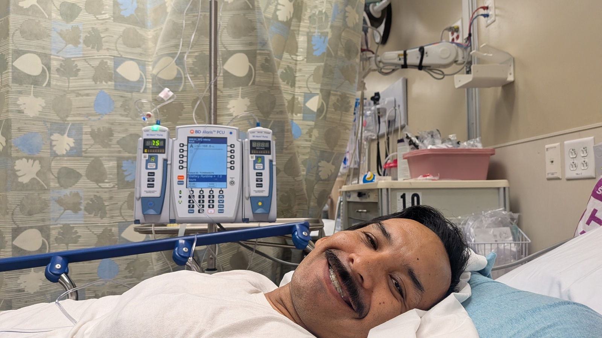
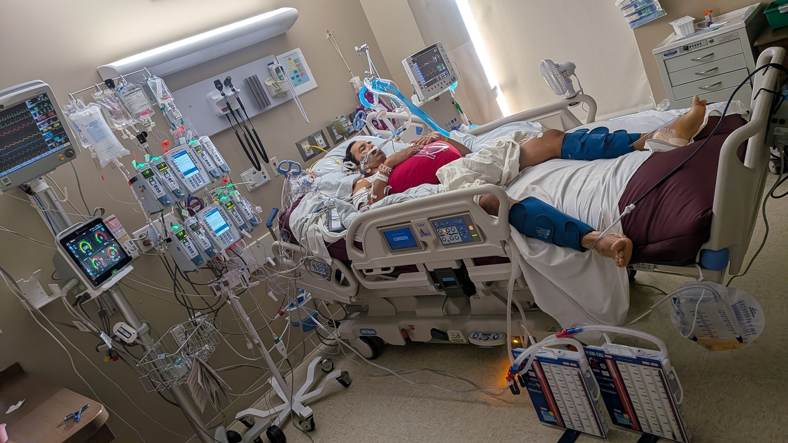
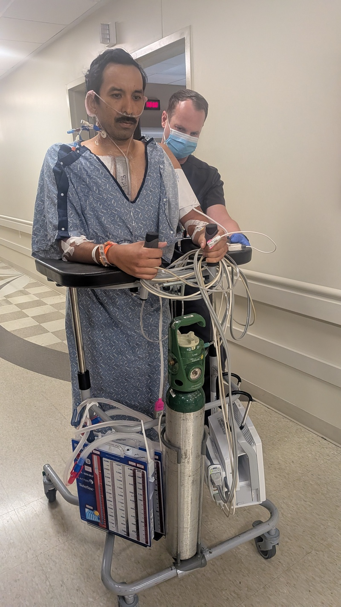
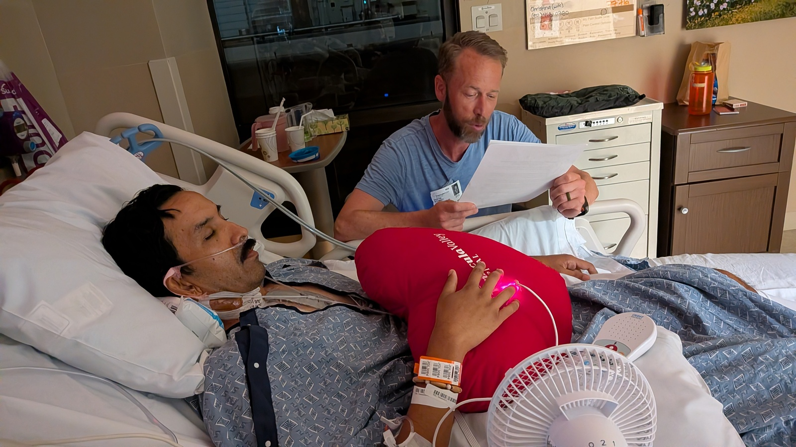
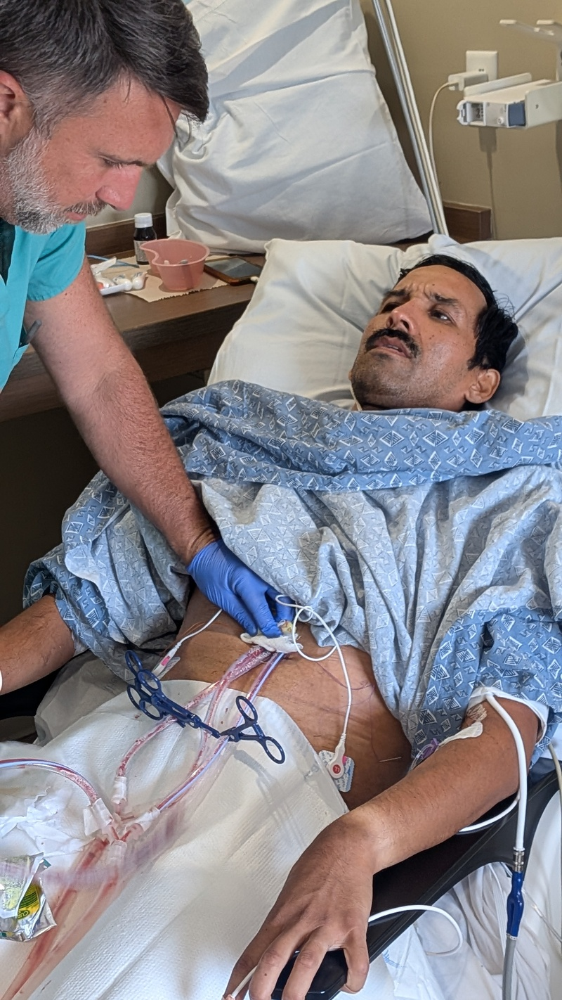
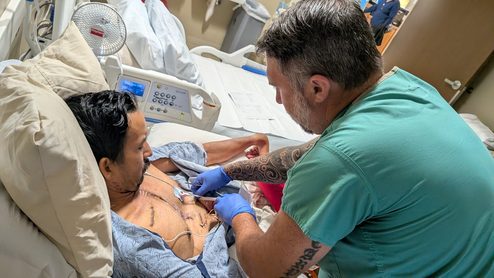
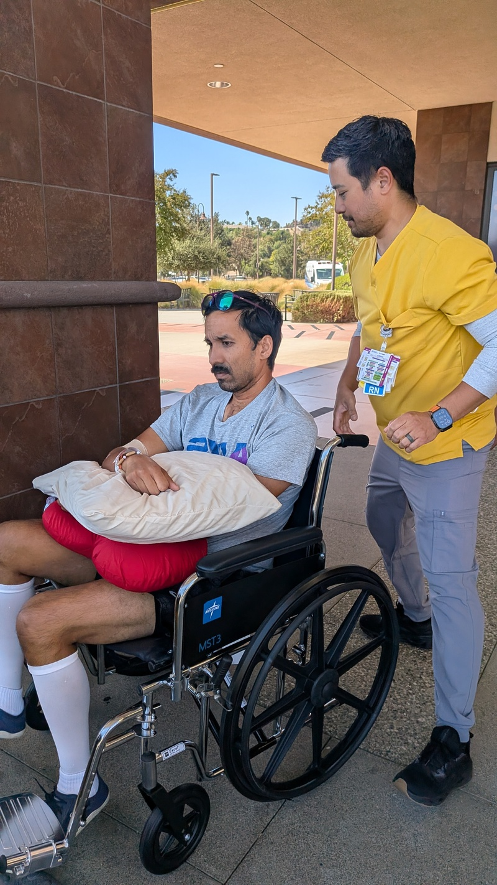
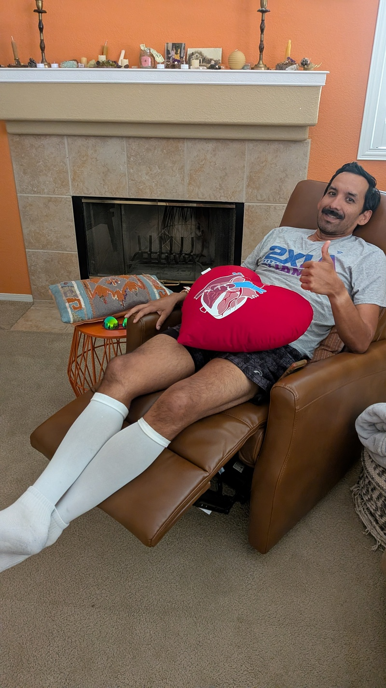

The Time I Almost Died on a Sunday
I had a major surgery for an aortic dissection. I was a lot closer to dying than I realized at the time. Turns out I have a rare connective tissue disease that was the cause for my dissections. I had no prior symptoms and my world changed one hot summer afternoon.
An emergency
Sunday August 23rd, the day had a high of 102ºF and I planned to do my normal rucking routine before the heat, followed by getting a birthday gift for my friend, then finishing up some small house projects. My morning walk went well, I opted for 35 lbs in my weight vest, put on my headphones and went on my way. Later after dropping off my friend’s birthday gift I came back home to eat a little food and take a breather before starting the next task on my to-do list. The wife, Christina, was at the grocery store with our two daughters, my mother-in-law was out and about enjoying the day and I was left home with our boy.
I was eating a bowl of hippy cheerios when I started feeling unwell and I noticed that my windpipe hurt a little when I tried taking a deep breath. They call this chest pain, but I wouldn’t quite describe it like that, more like just one spot in my body that felt tight, my windpipe. I thought it was odd and tried shuffling in the chair thinking it was just how I was sitting. I am 44 after all and sitting in a weird position can be uncomfortable sometimes. The symptoms weren’t going away and felt like they were intensifying so I quickly grabbed my blood pressure monitor and took a measurement. 104 systolic. That’s unusually low for me. I’ve always been in the low 130s. The reading alarmed me and I began texting Christina. She started up with the normal doctor follow-up questions asking about this and that thinking it was a stroke, but it definitely wasn’t that. I tried lying down on the living room floor, the boy was on the couch watching TV. I figured lying down could make it go away and I could go on about my day, only it wasn’t working. By this point I was making a lot of noises and I was shuffling around in discomfort. Eventually my son asked me if I was okay. I wasn’t.
I got up to go to the bathroom and I noticed my right foot was numb. Shit. I finished in the bathroom and by then I was limping. I sat down and continued texting with Christina. By this point it was apparent something was wrong, so she wrapped up her grocery run and rushed home. I went to use the bathroom again and this time my entire right leg started going numb. We got the mother-in-law home quickly because I knew I was taking a trip to the ER and she needed to be home to stay with the boy. Then the pain started. My right hip hurt so badly, I was in so much pain and that’s when I noticed that my entire low back also was in pain. That’s when I called 911.
The paramedics showed up and quickly went to work taking vitals and asking me all the questions. My wife had just gotten home by this time. The paramedics thought I had maybe dehydrated myself from my morning ruck and were giving me shit about doing such an activity on a hot day. Of course I didn’t ruck during the heat, morons, I did it in the cool morning. They asked if I could get up on my own power to get on the gurney and when I stood up my entire right leg was just dangling. I had no control of it, I could not feel it, it wasn’t swollen, it just hurt and it felt like it wasn’t there. That’s when the entire room realized that something very serious was wrong. The kids were scared and just wanted me to stay home and be okay. My heart was broken.
My wife recalls seeing a reading of 77 systolic and a 50 heart rate on the paramedics blood pressure machine. Severely low. Had I known those numbers at the time I would have thought I was a dead man. It was very hot outside when the sunlight hit me as I was being taken into the ambulance.Were the neighbors watching from their windows? Lucky for me the hospital was only three miles away and my wife is a physical therapist there. She followed the ambulance in our car. Man we need a new car, I thought I was looking at it from the large back windows of my ambulance ride. My hip hurt the entire ride. The paramedic was convinced my morning ruck just gave me a case of sciatica and was laughing it off saying I was going to be okay. Fuck that. I’ve never had any sciatica issue, this wasn’t sciatica.
Of course the ER was busy that day. I sat in my gurney halfway outside and inside in the ER entrance, feeling all 102 degrees of the day. The wait felt like it took forever. I kept shifting in my little bed on wheels until I found a comfortable spot that eased the pain in my hip. From there things are a blur. I was given a muscle relaxer and I was seeing so many nurses and doctors in quick succession. Everything was moving fast now. Christina did an amazing job of giving them my medical history, family history and helping to diagnose along with the ER team. I found out later that they wanted to treat me for back pain and someone who ate a tainted salad, remember the Taylor Farms salad scandal?
My wife shot down those two diagnoses and pushed for me to get a CT scan because I developed some numbness in my right hand. I remember a medical guy leaning over my bed and asking if I, the patient, wanted to get CT imaging, to which I humorously said I thought it wouldn’t hurt. Really? They asked me if I thought a CT scan would be a good idea? Of course it would! Why did I need to be the one to give the order? Wait, how close was I to being misdiagnosed? If Christina wasn’t there, I probably would have been misdiagnosed. I later found out that the actor John Ritter was back in the news at the time because his widow said that the actor was misdiagnosed with a heart attack when he ended up dying in the ER of an aortic dissection. Turns out my wife did march right up to the doctors office and demanded more imaging, she does work there but it was still very brave of her.
In the CT scanning machine I remember trying, and not having to try hard at all thanks to the drugs, to be relaxed and not move or panic during the procedure. The test was over before I knew it, much faster than an MRI and this next part I’ll never forget. The tech came into the room alarmed and with all bedside manners out of the window, told me something was very wrong with my aorta. So now we knew the problem. It wasn’t sciatica, it wasn’t a stroke, it wasn’t bad salad, this was worse. I had an aortic dissection. The same thing that almost killed my brother the year before. I had no idea what an aortic dissection was, but I figured it was serious.
Shit, how did we not take more actions in preventing this for myself over the past year? Clearly this was genetic, but I felt great, I had been given a fairly clean bill of health by the cardiologist and my primary just a year prior. Sure my cholesterol was a little high, but I lifted weights, I trained for backpacking trips, shit I had just hiked Mt. Whitney in June. I guess I’m very lucky this didn’t happen on Whitney. I would have been a goner, no way a helicopter gets me to a hospital in time out there. When my hiking buddies found out they too felt lucky they didn’t have to watch me potentially die on the trail.

I finally got upgraded to my own proper room, a very small room, while I awaited surgery. My wife said I was in the ICU of the ER. The surgeons were wrapping up with another patient before they worked on me, jokingly my wife offered them coffee since they were going to do back-to-back surgeries. By this time more of my family had made the drive out to see me. The kids were there too causing some ruckus wanting to play with the exam gloves. Christina and I were making jokes about the situation and having some laughs by then, thank you drugs. I then signed a bunch of forms put in front of me by a nurse for the surgery including one that let the surgeons give me blood transfusions, without this one I for sure would have died on the operating table.
We met the surgeons and Christina asked what my chances were at making it, to which I was given a 90% chance of living. That made me feel like I had nothing to lose. Last year my younger brother had the same surgery at the age of 40 and he was given just a 50% chance.Things were looking up. I took off the rubber bands from my braces since I figured those would get in the way of being intubated and since I was going to be missing work, I messaged Linnea and Bridget that I was about to undergo emergency heart surgery and would not be at work.
I said my goodbyes and was wheeled through several corridors where the sounds of the hospital got quieter and quieter, lonelier and lonelier the more doors I passed through. I met the operating team and they lifted me onto the surgery table where they then all introduced themselves to me. They asked me to take my shirt off, but reconsidered since I was in a delicate state so they instead asked my permission to cut it off. I jokingly told them that I was bummed that it would be cut up after all the work I put into finally whitening it. They reminded me to take off my wedding ring and as I handed it over I hoped it wouldn’t get lost. Once they realized my aorta was about to burst, I wasn’t allowed to use the bathroom, so I warned the surgeons that I had been eating a lot of red salsa in the past few days and if I somehow shit myself during surgery not to be alarmed that it was red. Didn’t want them thinking it was blood and needlessly complicating things. That didn’t elicit as many laughs as I hoped it would.
Tubes
I awoke in a new room and saw my dad and my cousin sitting there. I made it? I had tubes down my throat, an IV in both arms and things taped all over my body. I was quite comfortable and in no pain. My time in the ICU was quite memorable, I met so many nurses and had many visitors. Oh, and I had so many tubes in me. First things first, being intubated is torture. I never want that again. Luckily the tubes were removed later that first day.
I was very hot, unusually so, I immediately recognized it as a sign my body just had a major surgery so they brought me a small fan to clip to my bedside. I was also thirsty, I’ve never been so thirsty in my life. I tried motioning to the nurse that I wanted water but I wasn’t allowed any. I began to worry that I was getting dehydrated, but the nurse assured me I was being given fluids through the IV. Of course, how did I not think of that? Despite knowing that I wasn’t dehydrated thanks to the IV, I still kept asking for water. The tubes made it so I couldn’t close my dry mouth and I was miserable. As a compromise the nurse was able to mop my mouth with water. That’s what that little device was to me, I don’t even know what it was called and I don’t care. It was a little handle with a little square sponge on the end and she dipped it in a bowl of water and mopped my teeth and tongue. As ridiculous as that was, it provided relief to my parched mouth.

My surgery took six hours. It took longer than expected because my body kept oozing blood and I needed several bags of “blood products.” What are blood products and what did the surgeons mean by oozing? I needed about five bags of blood, glad I signed the blood transfusion form. Later that morning Christina arrived from taking the kids to school. She and other family stayed up in the waiting room during my surgery getting updates. The surgeon was texting her updates. On that morning she took the kids to their first day of school. She had already known that I had a successful surgery so she excused herself for that special first day. I would have done the same. My aorta had grafts to repair the dissection and a new aortic valve.
I kept making it clear to Christina and to the nurse that the tubes were irritating my throat and I wanted them gone. A lifetime had passed before we got clearance that my tubes could come out. I was relieved, but first the doctors wanted me to breathe on my own without the tubes’ aid for half an hour and if I could do that they would come out. I was up for the challenge, but my breathing was so shallow so fresh out of surgery. Oh and I could only make use of a fraction of my throat to breathe since the tubes were taking up all the real estate. This was going to be more challenging than I thought.
I tried hard to relax myself and not panic and just focused on breathing smoothly despite the tubes. I motioned to the nurse that I wanted to write something, so I wrote her a message “How am I expected to breathe when the tubes are taking up so much space in my throat?” I was so frustrated with this situation. Despite the tough position I was in, I completed the thirty minutes. But not so fast, because a different set of people had to be notified and then they had to make their way down to my room. More waiting. This wasn’t part of the bargain! I held up my end, why am I now being forced to struggle breathing more than the agreed amount? I could feel the hard plastic ends of the tubes wedged against the side of my throat. I could visualize it and I hated it. I tried telling them I needed relief, but I could only feebly gesture with my hands that the tubes were irritating my throat and I couldn’t take it any more, but there was nothing they could do, so I took matters into my own hands. If I could shift the tubes I could un-wedge them from the side of my throat. I carefully used my hands to shift them side to side to find relief. Wrong move man, the nurse thought I was trying to take them out. She scolded me and took my hands down and I practically cried, you got me all wrong, of course I’m not trying to take them out, I’m only trying to relieve my poor throat. Isn’t relief what the nurses are supposed to provide for me?
Eventually the tube people came in and introduced themselves. They had a nice chit chat with Christina, while I watched in agony. Really? You’re going to chit chat and make jokes while I struggle for air? I motioned angrily to my wife to wrap that shit up. They came over and started the process of removal. The guy started by disconnecting the tubes from the breathing machines and then stuck a cleaning brush in the open end coming out of my mouth. Can’t breathe! I can’t breathe! The jackass now made it so I couldn’t breathe at all. Are you kidding me? He quickly noticed I was in distress and realized he messed up.
The moment of truth, they began undoing the tape holding the tubes in my mouth, it was much more than I realized. I would never have been able to take those out on my own. They were longer coming out than I would have guessed and slimier too. Finally, I was free of the tubes. The nurse was able to feed me ice chips. Baby steps before being given full-on water. The chips were like magic in my mouth.

Later on after my first out of bed trip I realized something felt different around my belly. More tubes. I had more tubes and they were coming out of my belly. These were drainage tubes, about six feet long connected to little suitcase looking objects. While they didn’t hurt, they were cumbersome because anytime I had to get up, the suitcases, which were full of my drained fluids, had to be moved along with me. What a mess, IVs, tubes and tape holding me together.

A Rough Night
One of the medicines I was taking was a stool softener. While I took them daily, they hadn’t done much yet until this night. It was 7pm which meant a shift turnover for the nurses. I was always curious to meet my new nurse, each nurse was great and I gained so much respect and empathy for what they do. That night’s nurse was Blaine. Blaine had the all-American boy look and was very nice and was a damn good nurse. I awoke in the night with an immediate need to use the toilet. The stool softeners had arrived. For someone who can’t walk any distance because they’re recovering from a major surgery I was given the commode because my room’s bathroom was too far a walk. I paged for the nurse on my bedside remote. Blaine’s voice came through the remote asking what I needed. “Sorry, but I need to use the commode.” I said. After all the prep work of moving the blood-filled suitcases into position and un-reclining my bed I was up on my feet. He carefully guided me so that I could back into position and with full faith in Blaine I blindly squatted onto the commode I couldn't see behind me. I surprised myself with how strong my legs felt. All those years of weight lifting was paying off.
Blaine gave me a quick check and left the room. About ten minutes had passed when I heard Blaine’s voice on my remote asking if I was okay. No action. Nothing was happening. These stool softeners suck! I paged him back in and apologized to him for the false alarm. I was helped back into bed which meant moving the suitcases, moving the remote into reach, covering me up and sending me back off to sleep. Not even ten minutes later another strong urge of the stool softeners. This cycle repeated itself all through the night. I maybe had an actual bowel movement twice. I apologized to Blaine so much, I was sorry to bother him so much to help this grown man poop and to then clean me up after.
That night was the highlight of my time in the hospital. A picture of me, sad, lonely, tortured and miserable sitting on a commode in the middle of a dark cold room with a fluid-stained floor. It felt like Hellraiser and I was the poor soul who managed to open the puzzle box and now all the different hospital staff were torturing me all through the night.
The next morning I was running on fumes, I was so sleepy. I slept the morning away on my recliner. Shortly after Matt the nurse practitioner came in ready to remove my drainage tubes. Matt was about my age, had a ton of energy, was very charismatic and spoke less like a nurse and more like your college friend. I was nervous because I was told I would not get anything to numb the pain. So how would they come out? I could only think of one way, they would get pulled out. On the TV was classical music which set the mood. Looking back it felt a bit like a scene out of Silence of the Lambs, classical music playing while a man performed something bloody and painful and enjoyed it way too much.
I was surprised by how little tools Matt had with him. He conducted an invisible orchestra with his latex gloves and got to work removing the tape and stitches that held the tubes in. After a few short minutes of some pinches to my stomach he was ready to pull. I don’t know how I didn’t urinate myself out of fear. He began pulling and it felt like you’d expect, like something being pulled out of your body. It felt wrong. With the first pull I got the wind knocked out of me, I couldn’t breathe and a small panic took over. I thought it would take just one pull but he had to do another pull. One pull was enough, I couldn’t handle another pull, but it finally came out. He told me to breathe and I could only take tiny breaths while I squirmed in my chair. One more pull and it was over. I needed a minute to catch my breath. I'm glad that was over with. It wouldn't be the last time Matt would pull something out of me. There were electrical wires also coming out of my midsection that he would pull out days later. Those were directly connected to my heart and used to pace my heart on that first day. Those also hurt to be pulled out, but not as much as the tubes.
 
I spent eight days in the hospital, four of those in the ICU and the rest in the cardiac unit. A vascular surgeon drew a crude drawing of the aorta explaining what happened to me. An artery is made of several layers of tissue. A dissection happens when an inner layer tears and the high pressure blood pushes in between the layers, ripping them further apart and creating two channels of blood. The dissection started right where the aorta connects to the heart, and traveled up and around the candy cane arch. It created a 5 cm aneurysm at the start of the arch, which was the main emergency that could have ended my time on earth. Had the outer wall of my aorta also torn, I would have died. This is why the CT scan operator was spooked, he understood how close to death I was.
The dissection also followed the three branches at the top of the arch that extend to both arms and my neck, but were each about an inch in length. The entire descending aorta was dissected and because it created two channels of blood pathways, my right kidney lost blood which explained my low back pain and my right leg lost nearly all of its blood supply because of that second false channel in my aorta. That explained the intense pain and numbness in the leg. I guess I came close to losing my leg or having difficulty walking, but as of today it feels good.

A Rare Connective Tissue Disease
The surgeons explained that they only see these types of dissections with patients that have a connective tissue disease, so after seeing a rheumatologist weeks later a blood test confirmed that I have Loeys-Dietz Syndrome. LDS is a connective tissue disease that is rare and genetic and has many traits that I present, with the worst case scenario being an aortic dissection. Glad I survived the worst case. My surgeons told me that I cannot lift more than 50 lbs or get my heart rate above 130 bpm. So there goes my home gym. My beloved squats and deadlifts, gone. Crazy to think that I was putting that much strain on my aorta by deadlifting while having an undiagnosed LDS. In hindsight that was very dangerous, but the tradeoff was building strength that helped me have such a short hospital stay.
My future is now going to involve more possible preventive surgeries, periodic head-to-pelvis CT scans, blood pressure medication and lifestyle changes. The big one being how I exercise. No more heavy lifting or climbing Mount Whitney. Two of my children also tested positive for LDS, so the same management will apply to them. I’m glad to be alive and glad that we can intervene in our children’s LDS at such a young age.
